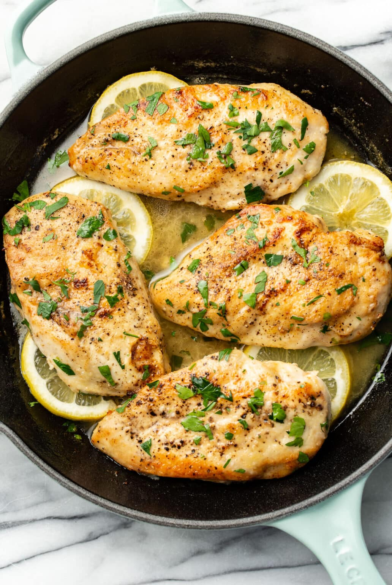

Easy Lemon Chicken

Description
The best 20 minute dinner you'll ever make. Juicy chicken and buttery lemon sauce, what a combo!
Ingrediants
2 large boneless skinless chicken breasts
- 1/4 teaspoon garlic powder
- Flour for dredging
- Salt & pepper
- 2 tablespoons lemon juice + zest of 1/2 lemon
- 1 tablespoon olive oil
- 3 tablespoons butter divided
- Chopped fresh parsley optional, to taste
Steps
- Cut your chicken breasts in half lengthwise so you have thinner cutlets. Sprinkle them with salt, pepper, and garlic powder. Dredge them in flour so they’re nicely coated.
- Add the olive oil and 1 tablespoon of the butter to a skillet over medium-high heat. Once the pan is hot, add the chicken cutlets and cook them for 4-5 minutes/side or until they’re nice and golden.
- Add the chicken broth, lemon juice + zest, and remaining butter to the pan and let it bubble for a couple of minutes.
- Add the chicken back in and cook for another few minutes until it's cooked through and the sauce is further reduced. Season as needed